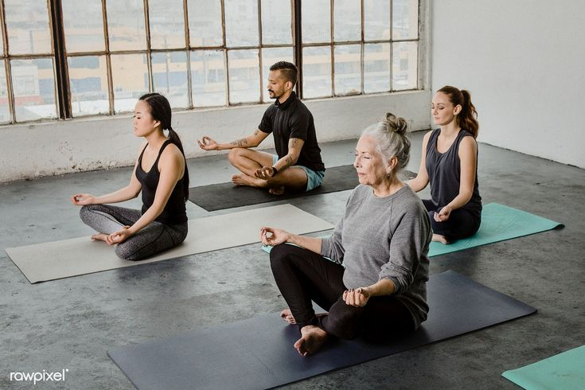
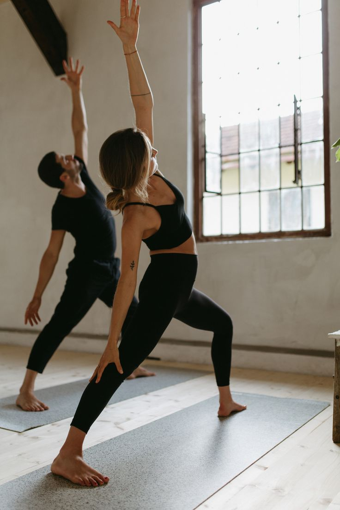

1. Diminui o estresse e ansiedade
Muitas pessoas lidam com problemas relacionados ao estresse e à ansiedade. Essa é uma situação bem frequente e que, infelizmente,
impacta negativamente a qualidade de vida daqueles que lidam com ela.
A yoga é uma boa alternativa para colaborar com a redução do estresse. De acordo com a profissional Educação Física Sênior do Centro de Reabilitação do Hospital Israelita Albert Einstein, Carla Giuliano,
contribui até para a prevenção de transtornos mentais (como é o caso da depressão), graças à liberação constante de neurotransmissores que promovem a sensação de bem-estar, como a dopamina, a endorfina e a serotonina.
2. Combate a inflamação
O nosso corpo está constantemente sob efeito de diversos agentes inflamatórios. Eles podem vir de alimentos, de compostos químicos, do ambiente em que vivemos e, até mesmo, de situações constantes de estresse.
Sendo assim, a yoga também se mostra como uma grande aliada no combate a esse tipo de situação. As inflamações trazem prejuízos, gerando dores e desconfortos, que podem ser atenuadas com a prática de atividades físicas.
3. Alivia dores
Você é do tipo que sofre com muitas dores? Saiba que não está sozinho! Desconfortos variados, que podem afetar regiões como a cabeça, os ombros, o pescoço, as costas e as pernas, fazem parte do dia a dia de muitas pessoas.
Mas isso não precisa ser uma realidade.
Uma dica é investir em práticas como a yoga, que promovem flexibilidade, ao mesmo tempo em que fortalecem os músculos. Assim, há estabilidade para as estruturas do nosso corpo, fazendo com que dores posturais e musculares sejam consideravelmente reduzidas.
4. Reduz os sintomas da TPM
Um problema muito frequente na população é a questão dos sintomas da TPM (tensão pré-menstrual), além das cólicas menstruais, que acabam prejudicando a vida de muitas mulheres. Se você faz parte desse grupo, saiba que a yoga também pode ajudar.
Segundo a Carla Giuliano, essas alterações são derivadas de grandes mudanças hormonais pelas quais as mulheres passam nesse período. A prática da yoga pode auxiliar na redução da manifestação dos sintomas e incômodos que podem surgir derivados desse processo, ajudando-as a passarem pela TPM com mais tranquilidade.
5. Controla a pressão e os batimentos cardíacos
As doenças cardíacas estão entre as que mais matam em todo mundo, assim como a hipertensão arterial. A boa notícia é que além de controlá-las com o uso de medicações prescritas pelos médicos e outros tratamentos, a yoga pode ter ser uma terapia integrativa importante para avançar no tratamento.
Com a otimização da circulação sanguínea, promovida pela prática, o paciente pode observar melhoras em seu funcionamento cardíaco e na regulação geral da pressão arterial. Isso também é possível graças aos benefícios da yoga para o estresse.
6. Melhora o condicionamento físico
Quem faz exercícios de outros tipos, como academia, também pode se beneficiar com a prática da yoga. Isso também é muito válido para os sedentários, que já não se exercitam há um bom tempo e estão procurando algo para começar.
O motivo para isso? Os benefícios da prática para o condicionamento físico. Ao trabalhar aspectos como fortalecimento muscular e respiração, a yoga se torna uma grande aliada nesse aspecto e pode ajudar você a ter uma saúde muito mais equilibrada.
7. Ajuda no desempenho nos estudos e no trabalho
Uma última dica: você sabia que a yoga também é excelente para ajudar a ter melhores notas e um desempenho mais interessante em seu trabalho? Isso acontece por conta das suas vantagens para a concentração.
A profissional do Hospital Israelita Albert Einstein diz que “além da contribuição que todos exercícios físicos podem proporcionar, a yoga tem um diferencial que pode intensificar esses benefícios para a saúde mental, por promover uma prática que envolve exercícios de respiração, concentração e atenção”.
